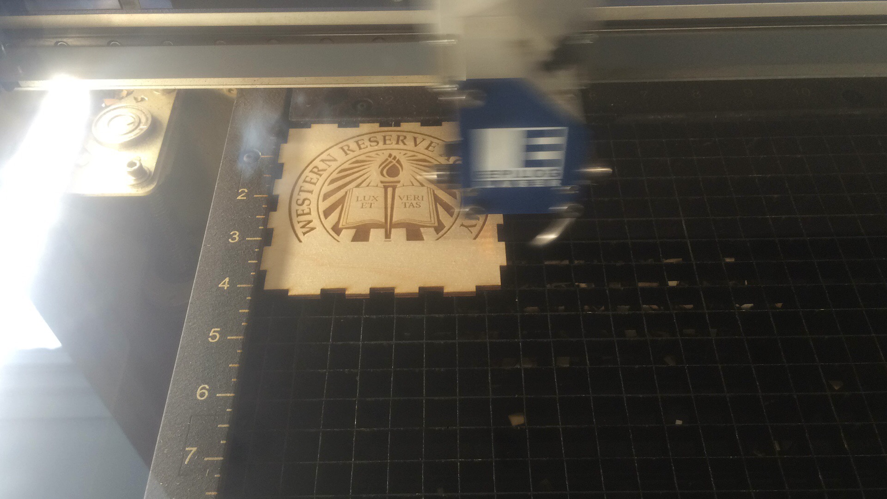

Puzzle (Part 2)
To finish the puzzle that we started in rotation 3, we now have to cut it with the laser cutter.
To cut this puzzle I used this file:
Puzzle CDRTo finish the puzzle that we started in rotation 3, we now have to cut it with the laser cutter.
To cut this puzzle I used this file:
Puzzle CDRThe next project was making a box with MakerCase, a website that after imputing dimensions will give you a file that you can open in coreldraw and use in the Laser Cutter.
These are images of the box I made. File:
MakerCase Box CDRThe next project was making a cardboard press fit kit.
These are images of the pieces I made. To make them I measured the width of the cardboard I would use and then when designing it in Fusion360 I made various geometrical shapes with incisions of the same width.
Press Fit Kit CDRThis project consisted in engraving a metal bookmark as shown below

This is a picture of the metal bookmark. File:
Metal Bookmark CDRThis project consisted in engraving a Glass using the rotary atachment of the laser cutter as shown below.
This is a picture of the process and end result.
Glass Cup CDR